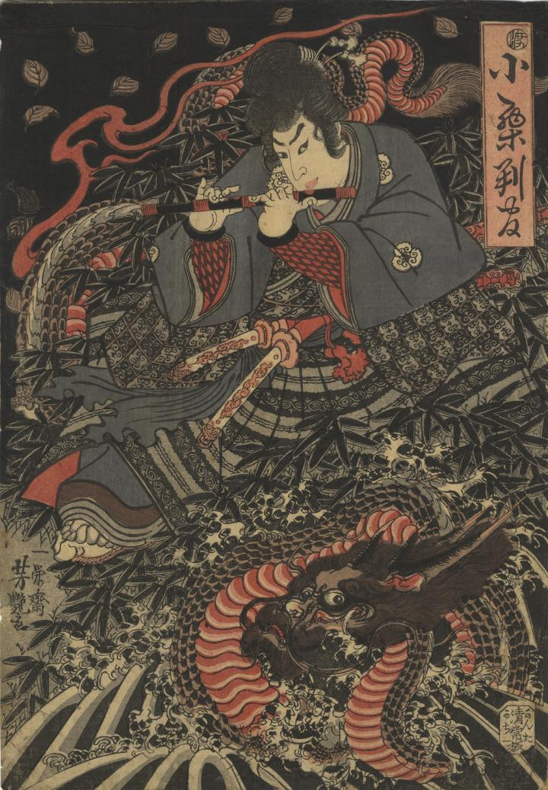

← 图鉴索引

龍に乗り笛を吹く小栗判官。龍の鱗は黒く、腹は赤い。
著作者：一栄齋芳艶／出典：親書誌：U426_nichibunken_0301：小栗判官；オグリ ハンガン／日付：2014／資源識別子：U426_nichibunken_0301_0001_0000
Copyright (c)2010- International Research Center for Japanese Studies, Kyoto, Japan. All rights reserved.